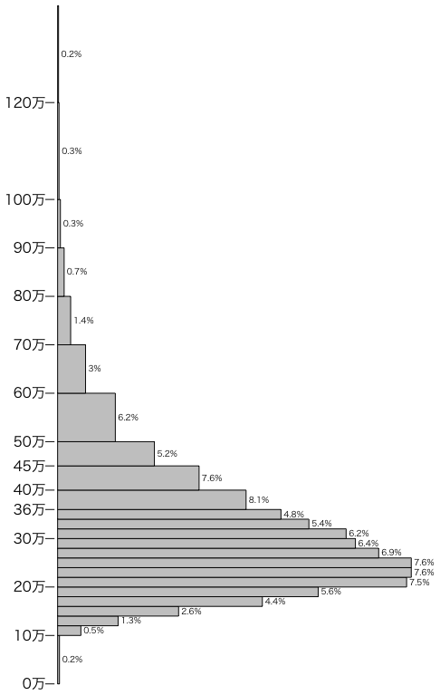

このページの新しいバージョンはグラフの例：賃金・給与の分布である。
厚生労働省：平成20年賃金構造基本統計調査結果（全国）にある「賃金の分布」（PDF）のデータ（男）をグラフにしました。
このページを作ってから1年たちました。最新の厚生労働省：平成21年賃金構造基本統計調査結果（全国）で男女のグラフを描いてください。
この調査は毎年6月の所定内給与額を調べたものです。諸手当や賞与は含まれていませんので，実際の年収はこの12倍より多いはずです。年収300万円なら十分“勝ち組”に？という記事は数字を1桁間違えて月収と年収を間違えているようです（平均年収が300万を切ったって？ それ間違いですから）。
# quartz(width=5.911417, height=9.191929) # Mac
# par(family="HiraKakuPro-W3") # Mac
par(xpd=TRUE) # プロットエリア外に text() を描く
par(mar=c(1,4,1,4)+0.1) # マージン c(5,4,4,2)+0.1
賃金 = c(0,100,120,140,160,180,200,220,240,260,280,300,
320,340,360,400,450,500,600,700,800,900,1000,1200)
割合 = c(0.2,0.5,1.3,2.6,4.4,5.6,7.5,7.6,7.6,6.9,6.4,6.2,
5.4,4.8,8.1,7.6,5.2,6.2,3.0,1.4,0.7,0.3,0.3,0.2)
幅 = c(賃金[2:24],1400)-賃金
barplot(割合/幅, 幅, horiz=TRUE, space=0, axes=FALSE)
t = c(0,100,200,300,360,400,450,500,600,700,800,900,1000,1200)
axis(2, labels=paste(t/10,"万",sep=""), at=t, lwd=0, lwd.tick=1)
text(割合/幅, 賃金+幅/2, paste(" ",割合,"%",sep=""), cex=0.6, adj=0)
平均値333.7千円，中位数（中央値）298.1千円です。
Last modified: